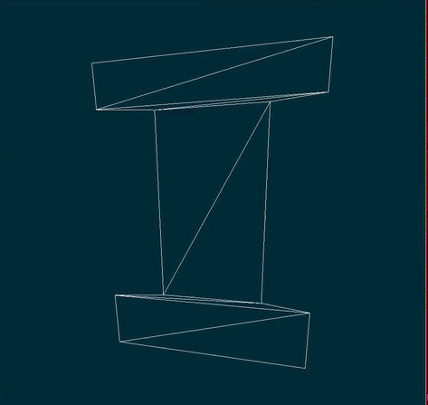

Dancing I
This is the result of the first MP for my graphics class. I’ve gone ahead and dumped the readme I quickly wrote up it, as well as include some frames from the video. This project is my first non-trivial Haskell project, implemented from scratch. Source Code
Libraries
There were a few libraries like lambdacube3d and gpipe that offered the prospect of functional and put graphics development, however both seemed like they’d take to much take to get started. Another libary, diagrams offers a really nice DSL for generating shapes, but its focus is not performance.
Images

Disclaimer
Before moving on, I’d like to quote the MP1 spec “The notes demonstrate a couple of models of the block letter ‘I’ and you can code up one of these, or create your own model, possibly with more detail or a different font style.”
12 Vertex Calls :p
- I decided to use a different model for the I than the one given in class. Given that (as far as I can tell) the 15 vertices call solution requires 13 vertex, this is more or less necessary
- The 15 vertex call solution is ugly (code wise), and I wanted to see if I could get it down to 1 triangle strip.
- By exploiting the font style loophole, I moved the points intersecting with the base down slightly.
- This enabled the model to be 100% stripable…i.e. it just needed 12 vertex calls
- The variable epsilon in the code can be tuned so that it looks arbitrarily close to the original
Not a T intersection
- I’d like to stress that what looks like a T intersection…is actually 2 very thin triangles.
- In the majority of animations, I left epsilon such that this can be seen.
- In output_I.mkv, I made epsilon such that it looks like a T intersection
Animation
- The functions wiggle and render act as a CPU based vertex shader
- The animation is set to move with the system clock, and will add/drop frames so that it has the same movement regardless of the FPS (which is set by GLUT + VSYNC + X)
Video
videos produced by: ffmpeg -f x11grab -s 1024x768 -r 25 -i :0.0 output.mkv there seems to be a warm up period (the video caputures at a lower framerate and then it stablizes)
Video Files


Requirments to execute binary
- Glut
- Opengl
Requirements to build
- GHC
- Optparse-applicative
- GLUT
- OpenGL